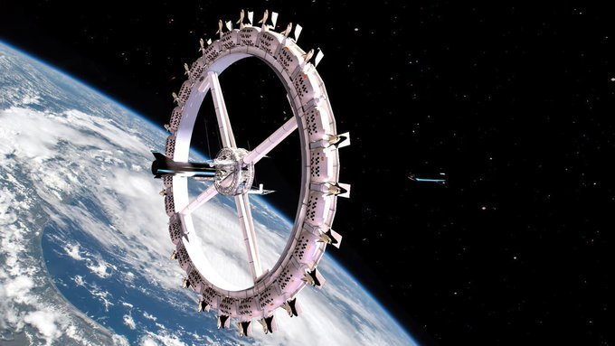
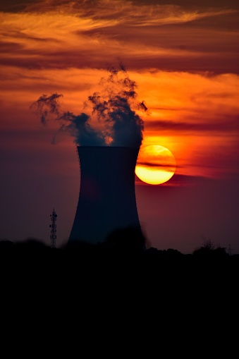
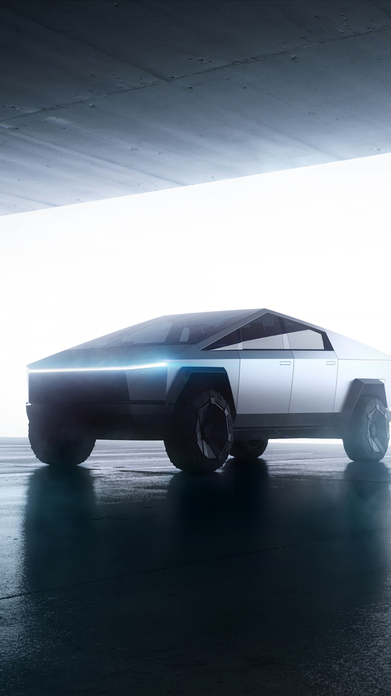
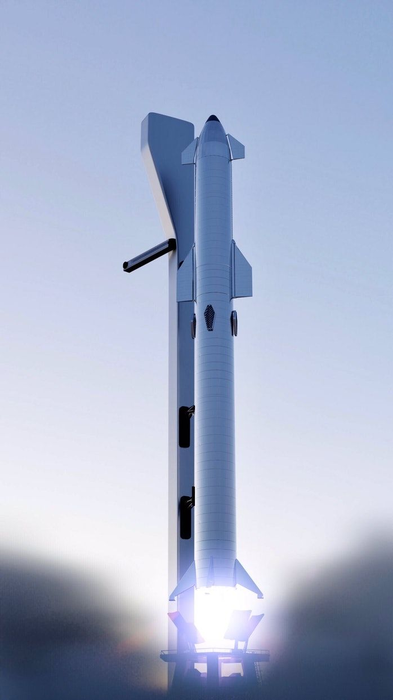
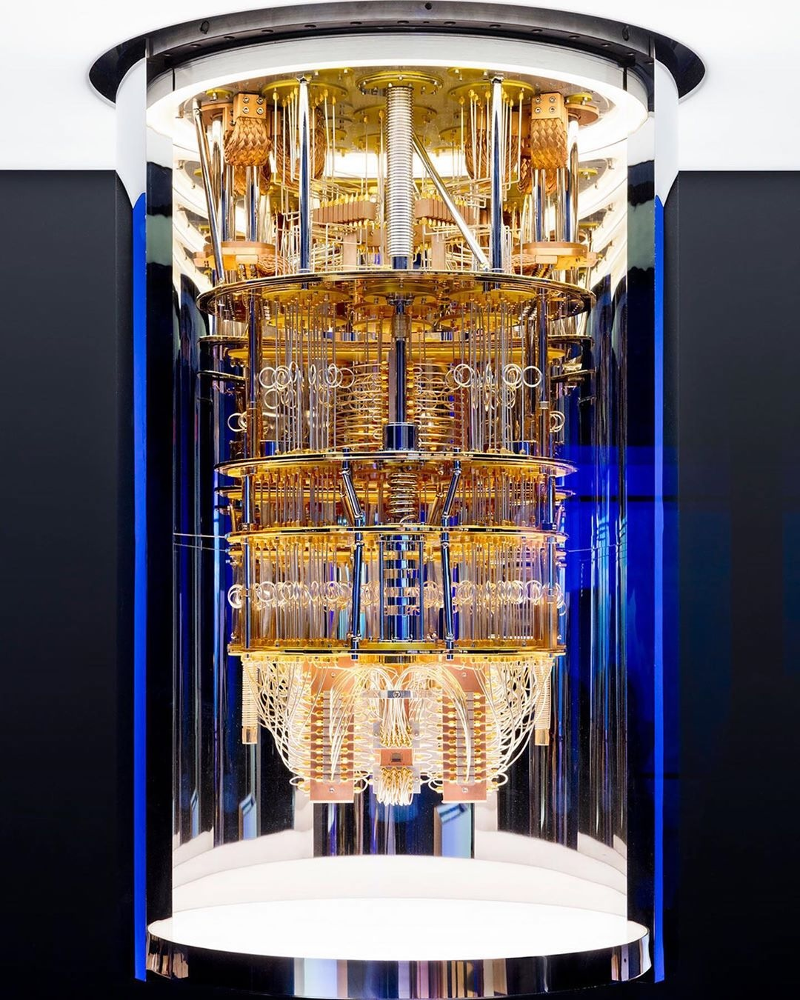
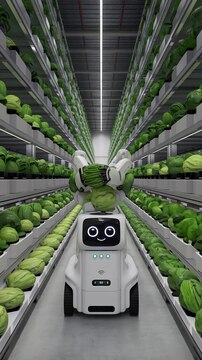
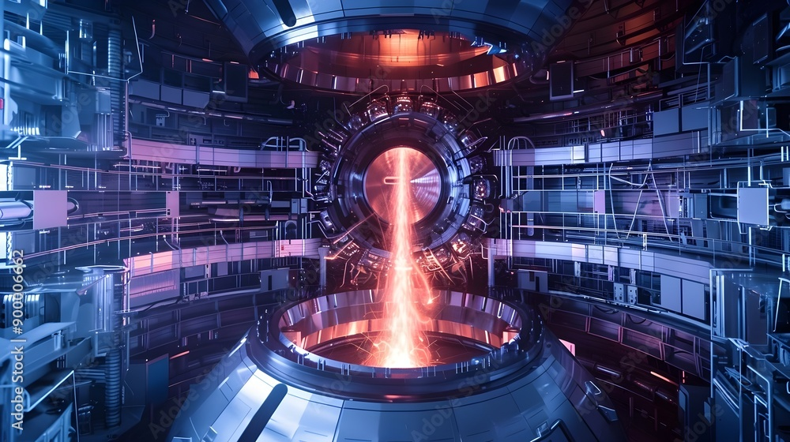

Definition
A Type 0 civilization cannot yet fully use all the energy available on its planet. Humanity is currently around Type 0.7.
Background
Humans still rely on fossil fuels, limited renewable energy, and have not fully controlled planetary resources.
Meaning
This stage represents civilizations still developing science, energy systems, and global cooperation.
Possible Technology

Internet and Artificial Intelligence

Space Stations

Nuclear Energy

Satellites and Global Communication

Electric Vehicles
Possible Machines

Rockets

Quantum Computers

Autonomous Robots

Fusion Reactor Prototypes
Advanced Drones
Back to Top